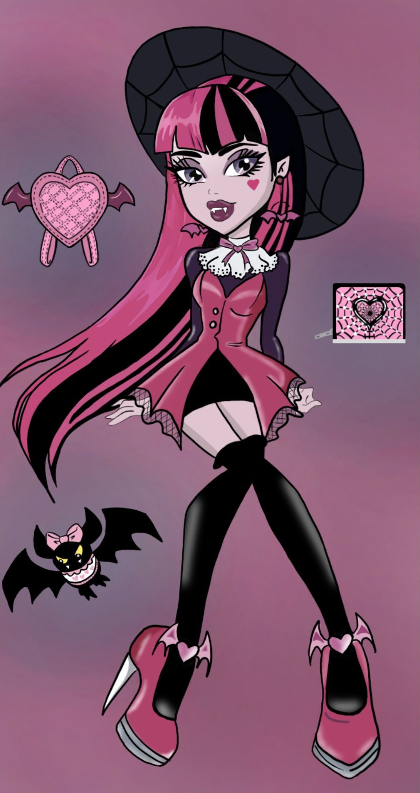

01. Dibujo Digital
Estudio de formas y color digital.



Estudiante de Ingeniería en Diseño Multimedia con enfoque en desarrollo frontend y creación de contenido visual. Mi trabajo combina precisión técnica con sensibilidad artística en áreas como fotografía, modelado 3D e identidad visual.
Ingeniería en Diseño Multimedia
UNACAR | 2023 — PresentePreparatoria Benito Juárez
2020 — 2023Estudio de formas y color digital.

Exploración costera en Ciudad del Carmen.


Macro-detalles botánicos regionales.


Construcción de logos y marcas.


Diseño de etiquetas y packaging.